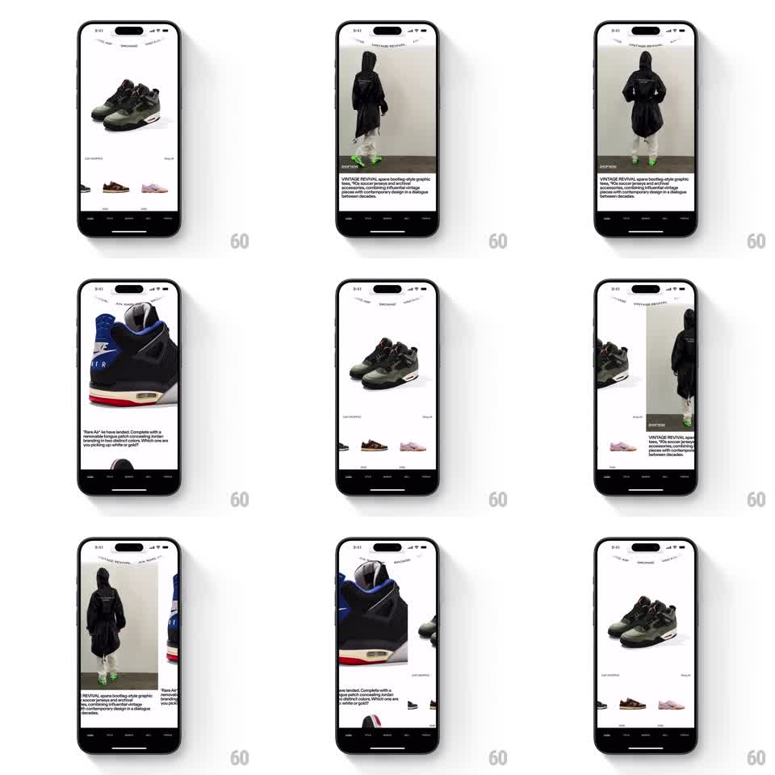

Media
Frame-by-frame

Rebuild this interaction 1:1: GOAT's curved top tab bar - tabs sit on an invisible circular arc, and swiping between pages rotates the bar along that arc: the active tab rises to the arc's peak while the others sink to the sides, labels staying upright.

Rebuild this interaction 1:1: GOAT's curved top tab bar - tabs sit on an invisible circular arc, and swiping between pages rotates the bar along that arc: the active tab rises to the arc's peak while the others sink to the sides, labels staying upright. ## Integration Integration: stack-agnostic spec - springs given as stiffness/damping, timed motions as duration + curve; map every value to your framework and animation library of choice. ## Scene Sneaker marketplace page: top tab strip (3-5 text tabs) curved along a shallow arc, content pages below (editorial imagery), bottom tab bar. The arc reads like the tabs are placed on a huge circle centered far below the screen. ## Motion spec Pattern: gesture-driven arc rotation. - Swipe horizontally: the whole tab strip rotates around the arc's center, tracking the drag (rotation proportional to x displacement, ~0.05deg per px). - The active tab (at the arc's peak) is emphasized: slightly larger, full opacity; side tabs shrink and fade (~70% opacity) with distance from the peak. - Labels stay horizontal while their positions follow the arc - position rotates, glyphs don't. - Release: springs to the nearest tab's alignment (spring ~240/22, ~400ms), content page crossfades at the 50% point. - Edge resistance past the first/last tab (rubber-band 0.4x). ## Calibration - The arc curvature is shallow (radius several times the screen width) - enough to feel orbital, not circular. - Emphasis interpolation (size/opacity vs arc position) must be continuous, not per-tab states. ## Reduced motion Tabs swap emphasis instantly on snap; no rotation tracking. ## Don't miss - Position follows the arc, rotation does not apply to the labels. - The peak tab aligns with screen center after every settle.